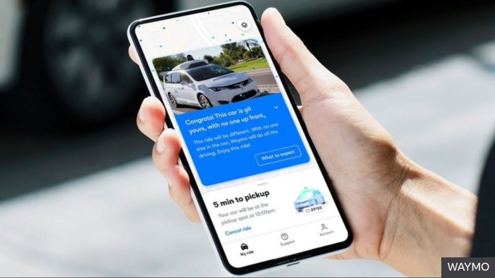

Driverless taxis to be available in Phoenix 'in weeks'

People in Phoenix, Arizona will soon be able to order a driverless taxi, as Google expands its Waymo service.
Vehicles with no human driver on board were previously tested by a select group of Waymo customers, before the pandemic halted the service.
The driver-free cars will initially be available only to friends and family of those early Waymo adopters, but will extend to all app users within weeks.
The service comes two years later than originally promised.
The cars will be remotely monitored, with vehicle operators intervening in extreme circumstances - such as a road ahead being closed.
According to Ars Technica, cars will initially only cover a 50 sq mile (130 sq km) area in the Phoenix suburbs of Chandler, Tempe and Mesa. The company has yet to provide details on exactly how many people would be given access to the app that will allow them to hail the driverless taxis.
The firm said: "We expect our new driverless service to be very popular, and we're thankful to our riders for their patience as we ramp up availability to serve demand."
Waymo has around 600 cars in its fleet, but it did not say how many of these would operate in the new service.
Before the pandemic, driver-free vehicles provided 5-10% of rides (out of 1,000-2,000 rides per week) in the designated zone around Phoenix.
Later this year, the firm hopes to reintroduce rides with in-car vehicle operators, with barriers between the front and rear passenger seat, to ensure they are Covid-safe.
The additional vehicles will "add capacity and allow us to serve a large geographical area", the company said.
Chris Jones, an automotive analyst at research firm Canalys, said Waymo was currently the clear leader in driverless technology, and now had to persuade people to get in a car without a human driver.
Coronavirus may prove an incentive.
"We have seen concerns about getting into a shared vehicle because of the pandemic - and Uber's bookings, for example, have dropped significantly," Mr Jones explained.
"People are familiar with Waymo - they have been testing in Phoenix for many years. Trust will be important as people ask, for example: would I put my daughter in a Waymo to take her to school?"
The next stage for the firm will be expanding its services to other cities around the US, he added. Waymo is currently running tests in around 25 locations.